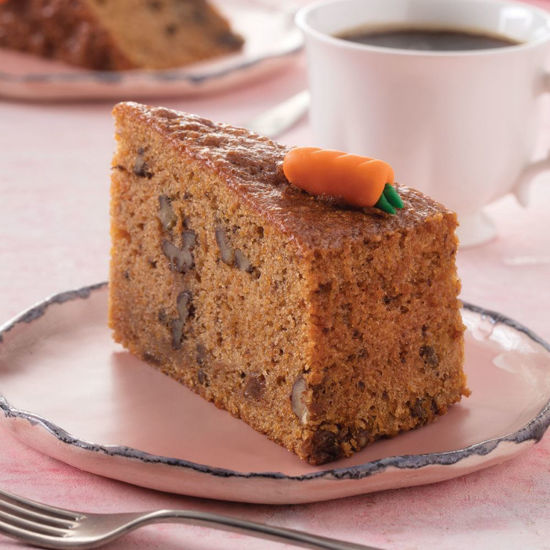

|

|
Kaç Kişilik:8kişilik Pişirme Süresi:40 dakika
Havuçlu Kek Tarifi İçin Malzemeler
- 3 yumurta
- 1 su bardağı şeker
- Yarım su bardağı sıvı yağ
- 1 su bardağı süt
- 2,5 su bardağı un
- 1 paket vanilya
- 1 paket kabartma tozu
- 3 adet havuç
- 1 su bardağı çekilmiş ceviz
- 1 yemek kaşığı tarçın
Havuçlu Kek Nasıl Yapılır?
- Havuçlu cevizli kek için öncelikle havuçlar yıkanıp soyularak rendelenir.
- Derin bir kapta yumurta ve şeker mikser ile köpük köpük olana kadar iyice çırpılır.
- Süt ve sıvı yağ eklenerek karıştırılır.
- Un, kabartma tozu ve vanilya elenerek eklenir. Kıvamına göre un miktarını ayarlayın.
- Malzemeler bir kez daha mikserle karıştırılıp içerisine havuç, ceviz ve tarçın ilave edilir.
- Tahta bir kaşıkla son kez karıştırılır.
- Kullanılacak kek kabı yağlandıktan sonra karışım kaba alınır.
- 170 derecede önceden ısıtılmış fırında yaklaşık 40 dakika pişirilir.
- Fırından aldığımız keki kalıptan daha kolay çıkartmak için soğumaya bırakalım.Soğuyan keki kalıptan çıkartalım.
Afiyet Olsun!
|